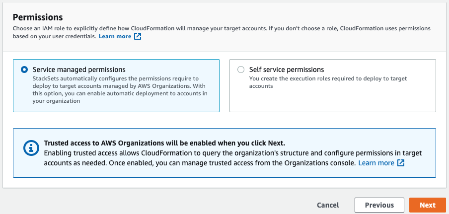

本文為英文版的機器翻譯版本，如內容有任何歧義或不一致之處，概以英文版為準。
建立堆疊集
您可以使用 AWS Management Console或在 AWS CLI 中使用 AWS CloudFormation 命令，以建立堆疊集。您可以建立具有 self-managed 或 service-managed 許可的堆疊集。
您可以利用 self-managed 許可，將堆疊執行個體部署到特定區域中的特定 AWS 帳戶 帳戶。若要這麼做，您必須先建立必要的 IAM 角色，才能在您用來管理堆疊集的帳戶與堆疊執行個體部署目的地帳戶之間建立信任關係。
若為 service-managed 許可，您可以將堆疊執行個體部署到特定區域中由 AWS Organizations 管理的帳戶。使用此模型時，您不需要建立所需的 IAM 角色；StackSets 會代表您建立 IAM 角色。您也可以自動部署到未來新增至目標組織或組織單位 (OU) 的帳戶。啟用自動部署後，如果從目標組織或 OU 移除堆疊執行個體，StackSets 會自動從帳戶刪除堆疊執行個體。
建立具有自我管理許可的堆疊集
使用 AWS Management Console 建立具有自我管理許可的堆疊集
在以下網址開啟 AWS CloudFormation 主控台：https://console.aws.amazon.com/cloudformation
。 -
從導覽窗格選擇 StackSets。
-
選擇 StackSets 頁面上方的 Create StackSet (建立 StackSet)。
-
選擇 Prerequisite - Prepare template (事前準備 - 準備範本) 下的 Use a sample template (使用範例範本)。
-
在選取範例範本下，從下拉式選單選擇啟用 AWS config 範本。選取 下一步。

-
在 Specify StackSet details (指定 StackSet 詳細資訊) 頁面中，提供下列資訊。
-
提供堆疊集的名稱。堆疊集名稱必須以字母字元開始，且僅包含字母、數字和連字號。在此逐步教學中，我們使用
my-awsconfig-stackset這個名稱。 -
系統會提示您指定 AWS Config 所使用的參數值。如需有關這些參數的詳細資訊，請參閱《AWS Config 開發人員指南》中的使用主控台設定 AWS Config。在此逐步教學中，我們將保留所有 AWS Config 參數的預設設定。
-
您可以根據日誌內容，使用 TopicARN 和 NotificationEmail 參數，設定依電子郵件更新 Amazon Simple Notification Service (SNS)。為了此逐步解說之目的，我們不會設定 Amazon SNS 更新。
-
您可以使用 DeliveryChannelName 和 Frequency (頻率) 參數，設定更新和通知的交付通道。如需有關 AWS Config 在交付通道的詳細資訊，請參閱《AWS Config 開發人員指南》中的管理交付通道。為了此逐步解說之目的，我們在此區域保留預設設定。
-
-
當您完成指定 AWS Config 的參數，請選擇 Next (下一步)。
-
在 Configure StackSet options (設定 StackSet 選項) 頁面中，透過指定鍵/值對來新增標籤。在此逐步教學中，我們建立名為 Stage (階段) 的標籤，其值為 Test (測試)。您套用至堆疊集的標籤將套用至您的堆疊建立的所有資源。如需有關如何在 AWS 中使用標籤的詳細資訊，請參閱《AWS Billing and Cost Management 使用者指南》中的使用成本分配標籤。
將 Permissions (許可) 保留為未指定。
-
對於 Execution configuration (執行組態)，選擇 Active (作用中)，以便 StackSets 會同時執行無衝突的操作，並將衝突操作排入佇列。衝突操作完成後，StackSets 會依請求順序啟動排入佇列的操作。
注意
如果已經有執行中或排入佇列的操作，StackSets 會將所有傳入操作排入佇列，即使這些操作沒有衝突也一樣。
當堆疊集有執行中或排入佇列的操作時，您無法修改堆疊集的執行組態。
-
選擇 Next (下一步)。
-
在設定部署選項頁面上，提供帳戶以及您希望堆疊集內的堆疊要部署的區域。
AWS CloudFormation 會在第一個區域內的指定帳戶中部署堆疊，然後移至下一個區域，以此類推。只要一個區域的部署失敗不超過指定的容錯能力。
-
針對 Accounts (帳戶)，選擇 Deploy stacks in accounts (在帳戶中部署堆疊)。在文字方塊中貼上您的目標帳戶號碼，並以逗號分隔多個號碼。
-
針對 Specify regions (指定區域)，選擇美國東部 (維吉尼亞北部) 區域。針對美國西部 (奧勒岡) 區域重複上述步驟。選取 美國西部 (奧勒岡) 區域 旁邊的向上箭頭，將它上移成清單中的第一個項目。Specify regions (指定區域) 下的區域順序決定其部署順序。
-
針對 Deployment options (部署選項)：
-
對於 Maximum concurrent accounts (同時使用的帳戶上限)，保留 Number (數值) 和 1 的預設值。
這表示 AWS CloudFormation 一次只在一個帳戶中部署您的堆疊。
-
針對 Failure tolerance (容錯能力)，保留預設值 Number (數字) 和 0。
這表示在您指定的其中一個區域中，堆疊部署最多只能失敗一次，否則 AWS CloudFormation 會停止目前區域中的部署，並取消在剩餘區域中的部署。
-
-
針對區域並行：
-
選取 Sequential (循序) 或 Parallel (並行)，以決定指定區域的 StackSets 部署順序。依預設，選取 Sequential (順序)。
選取 下一步。
-

-
-
在 Review (檢閱) 頁面上，檢閱您的選擇以及堆疊集的屬性。若要進行變更，請在您要變更屬性的區域中選擇 Edit (編輯)。在您可以建立堆疊集之前，必須填入 Capabilities (功能) 區域中的核取方塊，確認您使用堆疊集所建立的一些資源可能需要新的 IAM 資源和許可。如需有關可能需要之許可的詳細資訊，請參閱本指南中的確認 AWS CloudFormation 範本中的 IAM 資源。當您準備好建立堆疊集時，請選擇 Submit (提交)。

-
AWS CloudFormation 開始建立堆疊集。在您選擇 Submit (提交) 時開啟的 stack set details (堆疊設定詳細資訊) 頁面中，查看堆疊集中的堆疊建立進度和狀態。

使用 AWS CLI 建立具有自我管理許可的堆疊集
當您使用 AWS CLI 命令建立堆疊集時，您執行兩個不同的命令：create-stack-set 用於上傳範本並建立堆疊集容器，create-stack-instances 用於在堆疊集中建立堆疊。從執行 AWS CLI 命令 create-stack-set 開始，上傳啟用 AWS Config 的範例 AWS CloudFormation 範本，然後開始堆疊集建立。
-
開啟 AWS CLI。
-
執行下列命令。
對於
--template-url參數，請提供您存放範本之 Amazon S3 儲存貯體的 URL。在此逐步解說中，我們使用my-awsconfig-stackset作為--stack-set-name參數值。我們還會啟用--managed-execution，這樣 StackSets 會同時執行無衝突的操作，並將衝突操作排入佇列。衝突操作完成後，StackSets 會依請求順序啟動排入佇列的操作。注意
如果已經有執行中或排入佇列的操作，StackSets 會將所有傳入操作排入佇列，即使這些操作沒有衝突也一樣。
當堆疊集有執行中或排入佇列的操作時，您無法修改堆疊集的執行組態。
aws cloudformation create-stack-set \ --stack-set-name my-awsconfig-stackset \ --template-url https://s3.amazonaws.com/cloudformation-stackset-sample-templates-us-east-1/EnableAWSConfig.yml -
在您的
create-stack-set命令完成後，請執行list-stack-sets命令以查看已建立的堆疊集。您應該會在結果中看到新堆疊集。aws cloudformation list-stack-sets -
執行
create-stack-instancesAWS CLI 命令，將堆疊執行個體新增至堆疊集。在此逐步解說中，我們使用us-west-2和us-east-1作為--regions參數值。藉由將
FailureToleranceCount參數中的0設定為MaxConcurrentCount，並將1設定為--operation-preferences，以設定容錯能力和最大並行帳戶，如以下範例所示。若要改為套用百分比，請使用FailureTolerancePercentage或MaxConcurrentPercentage。為了此逐步解說之目的，我們將使用計數而非百分比。注意
MaxConcurrentCount的值取決於FailureToleranceCount的值。MaxConcurrentCount最多比FailureToleranceCount多 1。aws cloudformation create-stack-instances \ --stack-set-name my-awsconfig-stackset \ --accounts '["account_ID_1","account_ID_2"]' \ --regions '["region_1","region_2"]' \ --operation-preferences FailureToleranceCount=0,MaxConcurrentCount=1注意
操作中 StackSet 執行個體部署的並行性取決於
FailureToleranceCount-MaxConcurrentCount的值，且最多比FailureToleranceCount多 1。重要
請等待一個操作完成後，再開始另一個操作。您一次只能執行一個操作。
-
確認堆疊執行個體已成功建立。執行
DescribeStackSetOperation與operation-id(它被傳回作為步驟 4 輸出的一部分)。aws cloudformation describe-stack-set-operation \ --stack-set-name my-awsconfig-stackset \ --operation-idoperation_ID
建立具有服務管理許可的堆疊集
建立具有服務管理許可的堆疊集時的考量
建立具有服務管理許可的堆疊集之前，請考慮下列事項：
-
具有服務管理許可的堆疊集是在管理帳戶中建立的，包括由委派管理員建立的堆疊集。
-
堆疊集可以將整個組織或指定的組織單位 (OU) 設為目標。如果堆疊集以您的組織為目標，則也會以組織中所有 OU 中的所有帳戶為目標。如果堆疊集以指定的 OU 為目標，則也會以那些 OU 中的所有帳戶為目標。
-
如果堆疊集以父 OU 為目標，則堆疊集也會以任何子 OU 為目標。
-
多個堆疊集可以將相同的組織或 OU 設為目標。
-
堆疊集無法以組織外部的帳戶為目標。
-
堆疊集無法部署巢狀堆疊。
-
StackSets 不會將堆疊執行個體部署到組織的管理帳戶，即使管理帳戶位於組織中或組織中的 OU 也一樣。
-
自動部署是在堆疊集層級設定。您無法特別針對 OU、帳戶或區域來調整自動部署。
-
您用來登入管理帳戶之 IAM 主體實體 (使用者、角色或群組) 的許可，決定您是否有權使用 StackSets 進行部署。關於授與許可部署至組織的 IAM 政策範例，請參閱授與服務受管堆疊集許可的政策範例。
-
委派管理員具有部署至組織中帳戶的完整許可。管理帳戶無法限制部署至特定 OU 或執行特定堆疊集操作的委派管理員許可。
使用 AWS CloudFormation 主控台建立具有服務管理許可的堆疊集
-
在以下網址開啟 AWS CloudFormation 主控台：https://console.aws.amazon.com/cloudformation
。 -
從導覽窗格選擇 StackSets。
-
選擇 StackSets 頁面上方的 Create StackSet (建立 StackSet)。
-
在 Prepare template (準備範本) 下，選擇 Template is ready (範本已就緒)。
-
在 Specify template (指定範本) 下，選擇指定堆疊範本所在 S3 儲存貯體的 URL，或上傳堆疊範本檔案。選擇 Next (下一步)。
-
在 Specify StackSet details (指定 StackSet 詳細資訊) 頁面上，提供堆疊集的名稱、指定任何參數，然後選擇 Next (下一步)。
-
在 Configure StackSet options (設定 StackSet 選項) 頁面的 Tags (標籤) 下，指定任何標籤以套用至堆疊中的資源。
-
在 Permissions (許可) 下，選擇 Service-managed permissions (服務管理許可)。
如果 AWS Organizations 的信任存取已停用，則會顯示橫幅。需要信任存取，才能建立或更新具有服務管理許可的堆疊集。只有組織管理帳戶中的管理員，才具有 啟用使用 AWS Organizations進行受信任存取。 的許可。
 -
對於 Execution configuration (執行組態)，選擇 Active (作用中)，以便 StackSets 會同時執行無衝突的操作，並將衝突操作排入佇列。衝突操作完成後，StackSets 會依請求順序啟動排入佇列的操作。
注意
如果已經有執行中或排入佇列的操作，StackSets 會將所有傳入操作排入佇列，即使這些操作沒有衝突也一樣。
當堆疊集有執行中或排入佇列的操作時，您無法修改堆疊集的執行組態。
-
選擇下一步以繼續，並啟用受信任存取 (如果尚未啟用)。
-
在 Set deployment options (設定部署選項) 頁面的 Deployment targets (部署目標) 下，選擇要部署到組織中的哪些帳戶。
-
選擇 Deploy to organization (部署至組織)，以部署至組織中的所有帳戶。

-
選擇 Deploy to organizational units (OUs) (部署至組織單位 (OU))，以部署至特定 OU 中的所有帳戶。選擇 Add an OU (新增 OU)，然後將目標 OU ID 貼到文字方塊中。針對每個新的目標 OU 重複上述步驟。

-
-
在 Automatic deployment (自動部署) 下，選擇 StackSets 是否自動部署到未來新增至目標組織或 OU 的帳戶。

-
如果您已啟用自動部署，請在 Account removal behavior (帳戶移除行為) 下，選擇在從目標組織或 OU 移除帳戶時，是否保留或刪除堆疊資源。

注意
如果選取 Retain stacks (保留堆疊)，則會從堆疊集移除堆疊執行個體，但會保留堆疊及其相關資源。資源會保持在當前狀態，但不再是堆疊集的一部分。
-
在 Deployment regions (部署區域) 下，選擇您要部署堆疊執行個體的區域。選擇 Next (下一步)。
-
在 Review (檢閱) 頁面上，確認 StackSets 將部署到正確區域中的正確帳戶，然後選擇 Create StackSet (建立 StackSet)。
StackSet details (StackSet 詳細資訊) 頁面隨即開啟。您可以檢視堆疊集的堆疊建立進度和狀態。
使用 AWS CLI 建立具有服務管理許可的堆疊集
使用 AWS CLI 建立堆疊集時，您需要執行兩個不同的指令。在 create-stack-set 期間，您會上傳範本、建立堆疊集容器，以及管理自動部署。在 create-stack-instances 期間，您會在特定目標帳戶中建立堆疊執行個體。
當您身為委派管理員時，您必須在每次執行 StackSets 命令時將 --call-as 參數設定為 DELEGATED_ADMIN。
--call-asDELEGATED_ADMIN
委派管理員建立的堆疊集是在組織的管理帳戶中建立的。
-
開啟 AWS CLI。
-
執行
create-stack-set命令。在下列範例中，我們啟用自動部署，讓 StackSets 可以自動部署到未來新增至目標組織或 OU 的帳戶。從目標組織或 OU 移除帳戶時，我們會保留堆疊資源。我們還會啟用
--managed-execution，這樣 StackSets 會同時執行無衝突的操作，並將衝突操作排入佇列。衝突操作完成後，StackSets 會依請求順序啟動排入佇列的操作。注意
如果已經有執行中或排入佇列的操作，StackSets 會將所有傳入操作排入佇列，即使這些操作沒有衝突也一樣。
當堆疊集有執行中或排入佇列的操作時，您無法修改堆疊集的執行組態。
aws cloudformation create-stack-set \ --stack-set-nameStackSet_myApp\ --template-urlhttps://s3.us-west-2.amazonaws.com/cloudformation-templates-us-west-2/MyApp.template\ --permission-modelSERVICE_MANAGED\ --auto-deployment Enabled=true,RetainStacksOnAccountRemoval=true -
create-stack-set命令完成後，請執行list-stack-sets命令，確認已建立堆疊集。結果中會列出新的堆疊集。aws cloudformation list-stack-sets-
如果您在登入成員帳戶時，將
--call-as參數設定為DELEGATED_ADMIN，則list-stack-sets會傳回組織 管理帳戶 中具有服務管理許可的所有堆疊集。 -
如果您在登入 AWS 帳戶時，將
--call-as參數設定為SELF，則list-stack-sets會傳回 AWS 帳戶中的所有自我管理堆疊集。 -
如果您在登入組織 管理帳戶 時，將
--call-as參數設定為SELF，則list-stack-sets會傳回組織 管理帳戶 中的所有堆疊集。
-
-
執行
create-stack-instances命令，將堆疊執行個體新增至堆疊集。對於--deployment-targets參數，請指定組織根 ID 以部署到組織中所有帳戶，或指定 OU ID 以部署到這些 OU 中的所有帳戶。在此範例中，我們指定具有ou-rcuk-1x5j1lwo和ou-rcuk-slr5lh0aID 的 OU。aws cloudformation create-stack-instances --stack-set-nameStackSet_myApp--deployment-targets OrganizationalUnitIds='["ou-rcuk-1x5j1lwo", "ou-rcuk-slr5lh0a"]' --regions '["eu-west-1"]'重要
請等待一個操作完成後，再開始另一個操作。您一次只能執行一個操作。
-
使用步驟 4 的
create-stack-instances輸出中傳回的operation-id，執行describe-stack-set-operation，以驗證是否已成功建立堆疊執行個體。